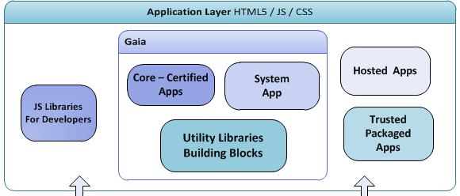

Firefox OS
PSU CS Capstone 2014
Dietrich Ayala
@dietrich
dietrich@mozilla.com
What is Firefox OS?

Firefox OS is a new open source mobile operating system.
Fully based on web technologies.
Provides an alternative, open platform
Firefox OS has been...
Released in 14 24 countries
On with 3 12 devices
By 7 14 mobile operators
Beyond smartphones


Firefox OS == Gonk + Gecko + Gaia
Gaia
Is a set of Web Applications covering the core functionality: dialer, messaging, contacts, camera, gallery, homescreen, keyboard, system...
The next 2 billion internet users
Non-US markets
Low powered devices
Dial-up speeds or nothing
No free connectivity (not even wifi)
User research!
We interview people in their homes
Brazil, Thailand, Indonesia, more
It turns out...
they're different than 'muricans
All of which means...
Offline design
Offline data
Local sharing (USB/BT)
No streaming
YOUR MISSION...
JavaScript library
Easing network aware programming
With emphasis on developer ergonomics
Technologies
Firefox OS
JavaScript
Flame reference device
Muse (Spring capstone)
Muse - Purpose
Experiment based on the research our teams did in Brasil, Columbia, Thailand, India
News reader app that targets new smartphone user, mostly offline, commutes a lot.
https://github.com/mmes2/muse
Muse - Libraries
Passive network info collector
Network info database
Network analysis
-> Predict opportunity windows
New APIs
Non-critical requests
Piggybacking
Last-network-access timestamp
"Now is good" events
Latency recording and analysis
Deliverables
APIs as standalone JS modules
Documentation, sample code for each
All in a Github repo